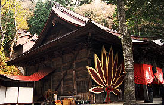
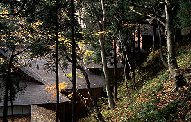

群馬県沼田市といえばギャルばかりが担ぐ天狗神輿が一部祭マニアの間では有名だが、その沼田のシンボルといわれる天狗を祭った寺が市郊外の迦葉山中にある。日本三大天狗ともいわれている迦葉山弥勒寺である。
さて、そんなこんなで様々な天狗面を見て楽しんでいたら内陣から「ドォーン」という太鼓の音がしてきた。 見ると加持祈祷を受ける参拝者が神妙な面持ちで座っている。そして坊さんはというと・・・信じ難い光景を見たのだった。何と坊さんが物凄〜く高いところで祈祷をしているのだった。
？？？？

オレは絶対行くね。
群馬県沼田市といえばギャルばかりが担ぐ天狗神輿が一部祭マニアの間では有名だが、その沼田のシンボルといわれる天狗を祭った寺が市郊外の迦葉山中にある。日本三大天狗ともいわれている迦葉山弥勒寺である。
天狗の寺というと何やら山岳信仰特有の行者さんが山の中を飛んだり跳ねたりという姿を想像しがちだが、実際行ってみると季節柄、紅葉モードの観光客がほとんどである。
で、中央のお堂へ。
この迦葉山弥勒寺はなぜか敷地の隅の方に本堂があってそちらにはほとんど人がいかない。代わりに中央にメインのお堂があって参拝客はみなここにお参りをしている。
正面にドーンと天狗団扇を掲げたお堂の中に入るといきなりとてつもなく大きな天狗の面がお出迎え。
大きい方が顔の丈5.5メートル。鼻の長さが2.7メートルもあるとの事。これは昭和14年に戦勝記念のためにつくられたものらしい。日本一の大天狗面。
しかもそれのみならず薄暗い堂内には数々の天狗面や天狗絵馬がかけられている。 これらをみると改めて天狗のバリエーションが多い事を思い知らされる。
髭や髪が伸び放題伸びているラスタマンタイプや トルシエもびっくりのぱっくり割れたお尻顎タイプ。鼻の穴忘れてますよ〜
そういえばこのお堂の前には狛犬の代わりにカラス天狗が立っていたっけ。
ここでの参拝のお約束。お願いに来た際に天狗の面を一個借りていく。で、願い叶ってお礼参りをする時はそのお面ともう一つ天狗のお面を奉納する。つまり倍々式に天狗の面は増えていくのである。
というわけで堂内は天狗天狗のオンパレード。日本三大天狗と言われる所以である。
さて、そんなこんなで様々な天狗面を見て楽しんでいたら内陣から「ドォーン」という太鼓の音がしてきた。 見ると加持祈祷を受ける参拝者が神妙な面持ちで座っている。そして坊さんはというと・・・信じ難い光景を見たのだった。何と坊さんが物凄〜く高いところで祈祷をしているのだった。
これは祈祷が終わってから撮影したもの。
見にくくて恐縮だが、こんなところで拝んでいたのだ。
大体、通常のお堂では考えられない程内陣が高い。建物の構造として明らかに無理がある。一体どうなっているのだろう、だいたい落ちたら危ないじゃないか、と思い、先程祈祷の参拝客が座っていた外陣まで上がらせてもらう。
おおお、確かに坊さんが祈祷していたところは高い。しかしさらに驚くべき事にその坊さんの座るところからさらに先にず〜っと内陣が上へ奥へと階段状に続いているではないか。
手前はいくつか提灯があるので見えるのだが、奥の方は相当距離があるらしくて暗くて見えない。階段状の暗いトンネルが続いているのだ。
え、何でこんな普通のお堂の中にこんなに奥行きのあるスペースがあるんだ？？？
お寺の中にいきなりブラックホールがある感じ。
まるで手品を見せられたかのような予想外の展開に暫くぽか〜んとしていると坊さんが次の祈祷の準備をし始める。手前から一個一個蝋燭を灯し始めた。暗いトンネルの中に蝋燭の灯だけがゆらゆらと揺れ、幻想的な光景を醸し出している。やはり相当奥の方まで内陣は続いている。 ？？？？
そこで、入口の案内図を思い出した。
たしかこのお堂の後方には山の斜面に沿って小さな建物が連続していたっけ。
そうか。後方の小さな建物は独立した建物ではなく、このお堂と一体化して全部つながっていたのだ。だからこんなに奥行きのある内陣がつくれたのだ。
改めてお堂の外に出て脇に回って後方を見てみる。そこで手品の種が明かされた。
 
やはり小さな屋根が連続してつながっている。つまりこの小さな建物はあの、幻想的な階段状トンネルという視覚的効果のためにわざわざ造られたものなのだ。
そしてその連続した建物の一番上に祠がある。
入口の案内図をもう一度見る。手前のお堂は拝殿、その後ろは中峰堂と表記されている。
つまりここは拝殿にいる人間が一番上の中峰堂におわす神にお願いをする、という神社の拝殿/本殿のスタイルを採っているのだ。しかもそのスタイルをより強調するためにその間にも建物を設け、長いトンネルを造り、神と人間の距離感を演出しているのだ。ただ幻想的な雰囲気をつくっただけではないのだ。
しかもこれらの連続建築群は拝殿を正面から見た時には後ろに建物が連続しているという事が分からない。最初認識していたのは拝殿だけ。だから拝殿の外陣に入ったときに単一のお堂ではあり得ない筈の奥行きと高さを持つ内陣の存在に参拝者が驚く、という仕組みになっているのだ。
何というニクイ演出だろう！ニクイ、ニクイぞ弥勒寺！
ところで、このトンネル状の建物の左右に一番奥まで続いている階段がある。先程坊さんが蝋燭を灯しに行ったのもこの階段を登っていったのだが関係者以外は立入り禁止。弥勒寺の方に話を伺うとこの階段を一般の人も登れるという大開帳という行事があるらしい！しかしそれは10年に1回。次は平成17年との事。 オレは絶対行くね。
今回は行かなかったけどさらに山奥には行者さんの修行場だろう、胎内巡りなどもあるそうです。
体力に自信のある方はどーぞ。
珍寺大道場 HOME